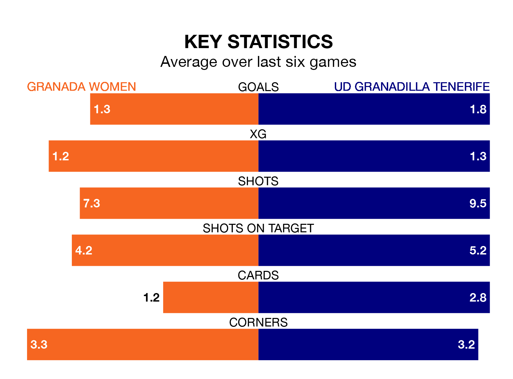

Granada Women host UD Granadilla Tenerife on Saturday at Ciudad Deportiva del Granada CF in Liga F.
In their last league match, on Sunday, Granada lost to Real Madrid Women 5-0 away.
Granadilla Tenerife drew, 2-2 at home against Madrid CFF, with Ange N'Guessan and Patricia Gavira Collado on the scoresheet.
Granada are 15th in the table after 23 games, of which they have won five and drawn three, earning 18 points.
Granadilla Tenerife are six places ahead of the hosts in ninth, with seven wins and seven draws putting them on 28 points.
With 23 goals in 23 games so far this season, Granada are scoring at below the league average rate with 1.0 goals per game. And they are conceding more than average, letting in 44 goals at a rate of 1.9 per game.
The away team are also below average scorers, with 1.3 goals per game, compared to a league average of 1.6. They have conceded 1.7 goals per game.
Granada are in mixed form in Liga F, with two wins and a draw from their last six games.
With two wins and two draws over that period, Granadilla Tenerife's form is slightly better – they have taken eight points from 18, compared to the home side's seven.
In Aline Villares Reis, Granadilla Tenerife can rely on one of the league's safest pair of hands. She has kept four clean sheets in her 17 appearances this season in Liga F.
In Granada's net, Sandra Estévez Ogalla has two clean sheets in 20 games. She has conceded a goal every 58 minutes, 10% more often than the 64 minutes between goals for Villares Reis.
Updated: 11:31 (UTC), 15/04/24